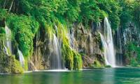

inputInicio
picture_in_pictureEstuve En..
trending_upMejores Viajes
chat_bubble_outlineRecomendaciones

"Antójate de Caicedonia", en la Vitrina Turística ANATO que se realizó en Bogota durante los días 24, 25 y 26 con el fin de mostrar y vender a Caicedonia como Destino Turístico a nivel nacional e internacional; con la participación de la Fundación Polacostudios, Viajes Valery, Mary Tours, Coja Tours, Cámara de Comercio de Sevilla, Lagos Bellavista, Club de Caza y Pesca, Parque Recreacional, Panaderia Ukrania, Restaurante El Balcón, Cootracaice y Key Publicidad.
A este municipio del norte vallecaucano, se están dando cita ahora quienes gustan de la aventura y desean conocer su región.
Un grupo de líderes de este municipio, plenos de entusiasmo, se ha unido para ofrecer al turista un programa diferente.
Un recorrido a caballo por los interminables cafetales, recreándose con los espigados y sensuales guaduales y apreciando la altivez de la palma zancona. Y en moda deportiva el municipio no se queda atrás. Caicedonia está rodeado de 12 lagos de pesca. Aquí el deporte y la recreación se unen para salir a la pelea de una tilapia roja o a un veloz tucunaré. El paquete turístico hace parte de la propuesta, que organizó el Fondo de Promoción Turística de Caicedonia, y busca ofrecer alternativas a los visitantes y mostrar las riquezas de la región. Se hace énfasis en el descanso que proporciona el verde de la naturaleza, lo que se denomina agroturismo. Caicedonia se encuentra a escasas dos horas de Cali por la carretera Panorama. Y no hay disculpa para disfrutar de su clima, pues este alcanza los 25 grados centígrados. A Caicedonia la conocen como la ciudad centinela del Valle y también como el epicentro de negocios, donde confluyen comerciantes de todas las regiones del país, Cuenta con dos cómodos hoteles, el Chamaná y el Caicedonia Plaza, con buen servicio y tarifas económicas, Así, Caicedonia está dispuesta a recibir a cualquier número de turistas.
Carlos Vargas Moreno (Cartago, Valle del Cauca, 23 de marzo de 1971) es un presentador colombiano. Reconocido por ser el presentador del programa La Red de Caracol Televisión.Vargas amante de la tecnología, quien lleva ocho años trabajando como periodista de entretenimiento. Su irreverencia y sarcasmo tienen nombre dentro de la farándula nacional, así como su honestidad: “Que se tengan las lauras, las amparos y las carolinas porque este cuerpecito robusto puede más que ocho horas de gimnasio”. Se ha identificado por su originalidad en entrevistas y lo carismática que es con las celebridad. Además ha colaborado en diferentes programas de Caracol Televisión como Día a Día.